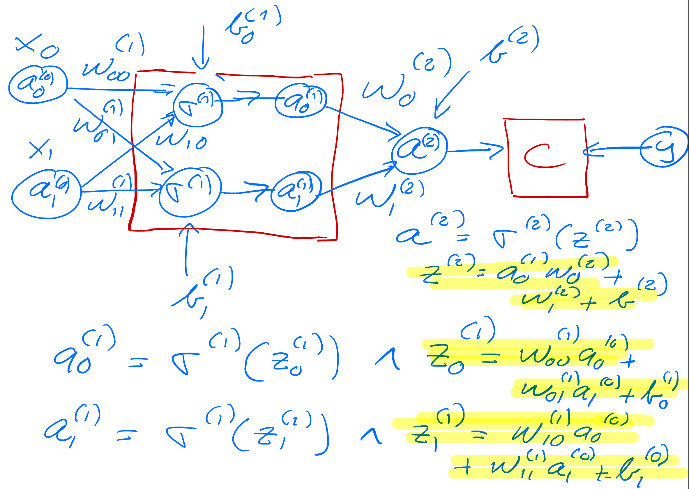

February 5-9: Advanced machine learning and data analysis for the physical sciences
February 6, 2024
Overview of fourth week, February 5-9
- Review of neural networks and automatic differentiation
- Discussion of codes
- Video of lecture
- Whiteboard notes
Mathematics of deep learning
- The Modern Mathematics of Deep Learning, by Julius Berner, Philipp Grohs, Gitta Kutyniok, Philipp Petersen, published as Mathematical Aspects of Deep Learning, pp. 1-111. Cambridge University Press, 2022
- Mathematical Introduction to Deep Learning: Methods, Implementations, and Theory, Arnulf Jentzen, Benno Kuckuck, Philippe von Wurstemberger
Reminder on books with hands-on material and codes
All three books have GitHub addresses from where one can download all codes. We will borrow most of the material from these three texts as well as from Goodfellow, Bengio and Courville's text Deep Learning
Reading recommendations
- Rashkca et al., chapter 11, jupyter-notebook sent separately, from GitHub
- Goodfellow et al, chapter 6 and 7 contain most of the neural network background.
- For CNNs, Goodfellow etal chapter 9 and Rashcka et al., chapter 14
Videos on CNNs
Excellent lectures on CNNs and Neural Networks
First network example, simple percepetron with one input
As yet another example we define now a simple perceptron model with all quantities given by scalars. We consider only one input variable \( x \) and one target value \( y \). We define an activation function \( \sigma_1 \) which takes as input
$$ z_1 = w_1x+b_1, $$where \( w_1 \) is the weight and \( b_1 \) is the bias. These are the parameters we want to optimize. The output is \( a_1=\sigma(z_1) \) (see graph from whiteboard notes). This output is then fed into the cost/loss function, which we here for the sake of simplicity just define as the squared error
$$ C(x;w_1,b_1)=\frac{1}{2}(a_1-y)^2. $$Layout of a simple neural network with no hidden layer

Optimizing the parameters
In setting up the feed forward and back propagation parts of the algorithm, we need now the derivative of the various variables we want to train.
We need
$$ \frac{\partial C}{\partial w_1} \hspace{0.1cm}\mathrm{and}\hspace{0.1cm}\frac{\partial C}{\partial b_1}. $$Using the chain rule we find
$$ \frac{\partial C}{\partial w_1}=\frac{\partial C}{\partial a_1}\frac{\partial a_1}{\partial z_1}\frac{\partial z_1}{\partial w_1}=(a_1-y)\sigma_1'x, $$and
$$ \frac{\partial C}{\partial b_1}=\frac{\partial C}{\partial a_1}\frac{\partial a_1}{\partial z_1}\frac{\partial z_1}{\partial b_1}=(a_1-y)\sigma_1', $$which we later will just define as
$$ \frac{\partial C}{\partial a_1}\frac{\partial a_1}{\partial z_1}=\delta_1. $$Implementing the simple perceptron model
In the example code here we implement the above equations (with explict expressions for the derivatives) with just one input variable \( x \) and one output variable. The target value \( y=2x+1 \) is a simple linear function in \( x \). Since this is a regression problem, we define the cost function to be proportional to the least squares error
$$ C(y,w_1,b_1)=\frac{1}{2}(a_1-y)^2, $$with \( a_1 \) the output from the network.
# import necessary packages
import numpy as np
import matplotlib.pyplot as plt
def feed_forward(x):
# weighted sum of inputs to the output layer
z_1 = x*output_weights + output_bias
# Output from output node (one node only)
# Here the output is equal to the input
a_1 = z_1
return a_1
def backpropagation(x, y):
a_1 = feed_forward(x)
# derivative of cost function
derivative_cost = a_1 - y
# the variable delta in the equations, note that output a_1 = z_1, its derivatives wrt z_o is thus 1
delta_1 = derivative_cost
# gradients for the output layer
output_weights_gradient = delta_1*x
output_bias_gradient = delta_1
# The cost function is 0.5*(a_1-y)^2. This gives a measure of the error for each iteration
return output_weights_gradient, output_bias_gradient
# ensure the same random numbers appear every time
np.random.seed(0)
# Input variable
x = 4.0
# Target values
y = 2*x+1.0
# Defining the neural network
n_inputs = 1
n_outputs = 1
# Initialize the network
# weights and bias in the output layer
output_weights = np.random.randn()
output_bias = np.random.randn()
# implementing a simple gradient descent approach with fixed learning rate
eta = 0.01
for i in range(40):
# calculate gradients from back propagation
derivative_w1, derivative_b1 = backpropagation(x, y)
# update weights and biases
output_weights -= eta * derivative_w1
output_bias -= eta * derivative_b1
# our final prediction after training
ytilde = output_weights*x+output_bias
print(0.5*((ytilde-y)**2))
Running this code gives us an acceptable results after some 40-50 iterations. Note that the results depend on the value of the learning rate.
Exercise 1: Extensions to the above code
Feel free to add more input nodes and weights to the above code. Furthermore, try to increase the amount of input and target/output data. Try also to perform calculations for more values of the learning rates. Feel free to add either hyperparameters with an \( l_1 \) norm or an \( l_2 \) norm and discuss your results.
You could also try to change the function \( f(x)=y \) from a linear polynomial in \( x \) to a higher-order polynomial. Comment your results.
Hint: Increasing the number of input variables and input nodes requires a rewrite of the input data in terms of a matrix. You need to figure out the correct dimensionalities.
Adding a hidden layer
We change our simple model to (see graph below) a network with just one hidden layer but with scalar variables only.
Our output variable changes to \( a_2 \) and \( a_1 \) is now the output from the hidden node and \( a_0=x \). We have then
$$ z_1 = w_1a_0+b_1 \hspace{0.1cm} \wedge a_1 = \sigma_1(z_1), $$ $$ z_2 = w_2a_1+b_2 \hspace{0.1cm} \wedge a_2 = \sigma_2(z_2), $$and the cost function
$$ C(x;\boldsymbol{\Theta})=\frac{1}{2}(a_2-y)^2, $$with \( \boldsymbol{\Theta}=[w_1,w_2,b_1,b_2] \).
Layout of a simple neural network with one hidden layer

The derivatives
The derivatives are now, using the chain rule again
$$ \frac{\partial C}{\partial w_2}=\frac{\partial C}{\partial a_2}\frac{\partial a_2}{\partial z_2}\frac{\partial z_2}{\partial w_2}=(a_2-y)\sigma_2'a_1=\delta_2a_1, $$ $$ \frac{\partial C}{\partial b_2}=\frac{\partial C}{\partial a_2}\frac{\partial a_2}{\partial z_2}\frac{\partial z_2}{\partial b_2}=(a_2-y)\sigma_2'=\delta_2, $$ $$ \frac{\partial C}{\partial w_1}=\frac{\partial C}{\partial a_2}\frac{\partial a_2}{\partial z_2}\frac{\partial z_2}{\partial a_1}\frac{\partial a_1}{\partial z_1}\frac{\partial z_1}{\partial w_1}=(a_2-y)\sigma_2'a_1\sigma_1'a_0, $$ $$ \frac{\partial C}{\partial b_1}=\frac{\partial C}{\partial a_2}\frac{\partial a_2}{\partial z_2}\frac{\partial z_2}{\partial a_1}\frac{\partial a_1}{\partial z_1}\frac{\partial z_1}{\partial b_1}=(a_2-y)\sigma_2'\sigma_1'=\delta_1. $$Can you generalize this to more than one hidden layer?
Important observations
From the above equations we see that the derivatives of the activation functions play a central role. If they vanish, the training may stop. This is called the vanishing gradient problem, see discussions below. If they become large, the parameters \( w_i \) and \( b_i \) may simply go to infinity. This is referenced as the exploding gradient problem.
The training
The training of the parameters is done through various gradient descent approximations with
$$ w_{i}\leftarrow w_{i}- \eta \delta_i a_{i-1}, $$and
$$ b_i \leftarrow b_i-\eta \delta_i, $$with \( \eta \) is the learning rate.
One iteration consists of one feed forward step and one back-propagation step. Each back-propagation step does one update of the parameters \( \boldsymbol{\Theta} \).
For the first hidden layer \( a_{i-1}=a_0=x \) for this simple model.
Code example
The code here implements the above model with one hidden layer and scalar variables for the same function we studied in the previous example. The code is however set up so that we can add multiple inputs \( x \) and target values \( y \). Note also that we have the possibility of defining a feature matrix \( \boldsymbol{X} \) with more than just one column for the input values. This will turn useful in our next example. We have also defined matrices and vectors for all of our operations although it is not necessary here.
import numpy as np
# We use the Sigmoid function as activation function
def sigmoid(z):
return 1.0/(1.0+np.exp(-z))
def forwardpropagation(x):
# weighted sum of inputs to the hidden layer
z_1 = np.matmul(x, w_1) + b_1
# activation in the hidden layer
a_1 = sigmoid(z_1)
# weighted sum of inputs to the output layer
z_2 = np.matmul(a_1, w_2) + b_2
a_2 = z_2
return a_1, a_2
def backpropagation(x, y):
a_1, a_2 = forwardpropagation(x)
# parameter delta for the output layer, note that a_2=z_2 and its derivative wrt z_2 is just 1
delta_2 = a_2 - y
print(0.5*((a_2-y)**2))
# delta for the hidden layer
delta_1 = np.matmul(delta_2, w_2.T) * a_1 * (1 - a_1)
# gradients for the output layer
output_weights_gradient = np.matmul(a_1.T, delta_2)
output_bias_gradient = np.sum(delta_2, axis=0)
# gradient for the hidden layer
hidden_weights_gradient = np.matmul(x.T, delta_1)
hidden_bias_gradient = np.sum(delta_1, axis=0)
return output_weights_gradient, output_bias_gradient, hidden_weights_gradient, hidden_bias_gradient
# ensure the same random numbers appear every time
np.random.seed(0)
# Input variable
x = np.array([4.0],dtype=np.float64)
# Target values
y = 2*x+1.0
# Defining the neural network, only scalars here
n_inputs = x.shape
n_features = 1
n_hidden_neurons = 1
n_outputs = 1
# Initialize the network
# weights and bias in the hidden layer
w_1 = np.random.randn(n_features, n_hidden_neurons)
b_1 = np.zeros(n_hidden_neurons) + 0.01
# weights and bias in the output layer
w_2 = np.random.randn(n_hidden_neurons, n_outputs)
b_2 = np.zeros(n_outputs) + 0.01
eta = 0.1
for i in range(50):
# calculate gradients
derivW2, derivB2, derivW1, derivB1 = backpropagation(x, y)
# update weights and biases
w_2 -= eta * derivW2
b_2 -= eta * derivB2
w_1 -= eta * derivW1
b_1 -= eta * derivB1
We see that after some few iterations (the results do depend on the learning rate however), we get an error which is rather small.
Exercise 2: Including more data
Try to increase the amount of input and target/output data. Try also to perform calculations for more values of the learning rates. Feel free to add either hyperparameters with an \( l_1 \) norm or an \( l_2 \) norm and discuss your results. Discuss your results as functions of the amount of training data and various learning rates.
Challenge: Try to change the activation functions and replace the hard-coded analytical expressions with automatic derivation via either autograd or JAX.
Simple neural network and the back propagation equations
Let us now try to increase our level of ambition and attempt at setting up the equations for a neural network with two input nodes, one hidden layer with two hidden nodes and one output layer with one output node/neuron only (see graph)..
We need to define the following parameters and variables with the input layer (layer \( (0) \)) where we label the nodes \( x_0 \) and \( x_1 \)
$$ x_0 = a_0^{(0)} \wedge x_1 = a_1^{(0)}. $$The hidden layer (layer \( (1) \)) has nodes which yield the outputs \( a_0^{(1)} \) and \( a_1^{(1)} \)) with weight \( \boldsymbol{w} \) and bias \( \boldsymbol{b} \) parameters
$$ w_{ij}^{(1)}=\left\{w_{00}^{(1)},w_{01}^{(1)},w_{10}^{(1)},w_{11}^{(1)}\right\} \wedge b^{(1)}=\left\{b_0^{(1)},b_1^{(1)}\right\}. $$Layout of a simple neural network with two input nodes, one hidden layer and one output node

The ouput layer
Finally, we have the ouput layer given by layer label \( (2) \) with output \( a^{(2)} \) and weights and biases to be determined given by the variables
$$ w_{i}^{(2)}=\left\{w_{0}^{(2)},w_{1}^{(2)}\right\} \wedge b^{(2)}. $$Our output is \( \tilde{y}=a^{(2)} \) and we define a generic cost function \( C(a^{(2)},y;\boldsymbol{\Theta}) \) where \( y \) is the target value (a scalar here). The parameters we need to optimize are given by
$$ \boldsymbol{\Theta}=\left\{w_{00}^{(1)},w_{01}^{(1)},w_{10}^{(1)},w_{11}^{(1)},w_{0}^{(2)},w_{1}^{(2)},b_0^{(1)},b_1^{(1)},b^{(2)}\right\}. $$Compact expressions
We can define the inputs to the activation functions for the various layers in terms of various matrix-vector multiplications and vector additions. The inputs to the first hidden layer are
$$ \begin{bmatrix}z_0^{(1)} \\ z_1^{(1)} \end{bmatrix}=\begin{bmatrix}w_{00}^{(1)} & w_{01}^{(1)}\\ w_{10}^{(1)} &w_{11}^{(1)} \end{bmatrix}\begin{bmatrix}a_0^{(0)} \\ a_1^{(0)} \end{bmatrix}+\begin{bmatrix}b_0^{(1)} \\ b_1^{(1)} \end{bmatrix}, $$with outputs
$$ \begin{bmatrix}a_0^{(1)} \\ a_1^{(1)} \end{bmatrix}=\begin{bmatrix}\sigma^{(1)}(z_0^{(1)}) \\ \sigma^{(1)}(z_1^{(1)}) \end{bmatrix}. $$Output layer
For the final output layer we have the inputs to the final activation function
$$ z^{(2)} = w_{0}^{(2)}a_0^{(1)} +w_{1}^{(2)}a_1^{(1)}+b^{(2)}, $$resulting in the output
$$ a^{(2)}=\sigma^{(2)}(z^{(2)}). $$Explicit derivatives
In total we have nine parameters which we need to train. Using the chain rule (or just the back-propagation algorithm) we can find all derivatives. Since we will use automatic differentiation in reverse mode, we start with the derivatives of the cost function with respect to the parameters of the output layer, namely
$$ \frac{\partial C}{\partial w_{i}^{(2)}}=\frac{\partial C}{\partial a^{(2)}}\frac{\partial a^{(2)}}{\partial z^{(2)}}\frac{\partial z^{(2)}}{\partial w_{i}^{(2)}}=\delta^{(2)}a_i^{(1)}, $$with
$$ \delta^{(2)}=\frac{\partial C}{\partial a^{(2)}}\frac{\partial a^{(2)}}{\partial z^{(2)}} $$and finally
$$ \frac{\partial C}{\partial b^{(2)}}=\frac{\partial C}{\partial a^{(2)}}\frac{\partial a^{(2)}}{\partial z^{(2)}}\frac{\partial z^{(2)}}{\partial b^{(2)}}=\delta^{(2)}. $$Derivatives of the hidden layer
Using the chain rule we have the following expressions for say one of the weight parameters (it is easy to generalize to the other weight parameters)
$$ \frac{\partial C}{\partial w_{00}^{(1)}}=\frac{\partial C}{\partial a^{(2)}}\frac{\partial a^{(2)}}{\partial z^{(2)}} \frac{\partial z^{(2)}}{\partial z_0^{(1)}}\frac{\partial z_0^{(1)}}{\partial w_{00}^{(1)}}= \delta^{(2)}\frac{\partial z^{(2)}}{\partial z_0^{(1)}}\frac{\partial z_0^{(1)}}{\partial w_{00}^{(1)}}, $$which, noting that
$$ z^{(2)} =w_0^{(2)}a_0^{(1)}+w_1^{(2)}a_1^{(1)}+b^{(2)}, $$allows us to rewrite
$$ \frac{\partial z^{(2)}}{\partial z_0^{(1)}}\frac{\partial z_0^{(1)}}{\partial w_{00}^{(1)}}=w_0^{(2)}\frac{\partial a_0^{(1)}}{\partial z_0^{(1)}}a_0^{(1)}. $$Final expression
Defining
$$ \delta_0^{(1)}=w_0^{(2)}\frac{\partial a_0^{(1)}}{\partial z_0^{(1)}}\delta^{(2)}, $$we have
$$ \frac{\partial C}{\partial w_{00}^{(1)}}=\delta_0^{(1)}a_0^{(1)}. $$Similarly, we obtain
$$ \frac{\partial C}{\partial w_{01}^{(1)}}=\delta_0^{(1)}a_1^{(1)}. $$Completing the list
Similarly, we find
$$ \frac{\partial C}{\partial w_{10}^{(1)}}=\delta_1^{(1)}a_0^{(1)}, $$and
$$ \frac{\partial C}{\partial w_{11}^{(1)}}=\delta_1^{(1)}a_1^{(1)}, $$where we have defined
$$ \delta_1^{(1)}=w_1^{(2)}\frac{\partial a_1^{(1)}}{\partial z_1^{(1)}}\delta^{(2)}. $$Final expressions for the biases of the hidden layer
For the sake of completeness, we list the derivatives of the biases, which are
$$ \frac{\partial C}{\partial b_{0}^{(1)}}=\delta_0^{(1)}, $$and
$$ \frac{\partial C}{\partial b_{1}^{(1)}}=\delta_1^{(1)}. $$As we will see below, these expressions can be generalized in a more compact form.
Gradient expressions
For this specific model, with just one output node and two hidden nodes, the gradient descent equations take the following form for output layer
$$ w_{i}^{(2)}\leftarrow w_{i}^{(2)}- \eta \delta^{(2)} a_{i}^{(1)}, $$and
$$ b^{(2)} \leftarrow b^{(2)}-\eta \delta^{(2)}, $$and
$$ w_{ij}^{(1)}\leftarrow w_{ij}^{(1)}- \eta \delta_{i}^{(1)} a_{j}^{(0)}, $$and
$$ b_{i}^{(1)} \leftarrow b_{i}^{(1)}-\eta \delta_{i}^{(1)}, $$where \( \eta \) is the learning rate.
Exercise 3: Extended program
We extend our simple code to a function which depends on two variable \( x_0 \) and \( x_1 \), that is
$$ y=f(x_0,x_1)=x_0^2+3x_0x_1+x_1^2+5. $$We feed our network with \( n=100 \) entries \( x_0 \) and \( x_1 \). We have thus two features represented by these variable and an input matrix/design matrix \( \boldsymbol{X}\in \mathbf{R}^{n\times 2} \)
$$ \boldsymbol{X}=\begin{bmatrix} x_{00} & x_{01} \\ x_{00} & x_{01} \\ x_{10} & x_{11} \\ x_{20} & x_{21} \\ \dots & \dots \\ \dots & \dots \\ x_{n-20} & x_{n-21} \\ x_{n-10} & x_{n-11} \end{bmatrix}. $$Write a code, based on the previous code examples, which takes as input these data and fit the above function. You can extend your code to include automatic differentiation.
With these examples, we are now ready to embark upon the writing of more a general code for neural networks.
Getting serious, the back propagation equations for a neural network
Now it is time to move away from one node in each layer only. Our inputs are also represented either by several inputs.
We have thus
$$ \frac{\partial{\cal C}((\boldsymbol{\Theta}^L)}{\partial w_{jk}^L} = \left(a_j^L - y_j\right)a_j^L(1-a_j^L)a_k^{L-1}, $$Defining
$$ \delta_j^L = a_j^L(1-a_j^L)\left(a_j^L - y_j\right) = \sigma'(z_j^L)\frac{\partial {\cal C}}{\partial (a_j^L)}, $$and using the Hadamard product of two vectors we can write this as
$$ \boldsymbol{\delta}^L = \sigma'(\hat{z}^L)\circ\frac{\partial {\cal C}}{\partial (\boldsymbol{a}^L)}. $$Analyzing the last results
This is an important expression. The second term on the right handside measures how fast the cost function is changing as a function of the $j$th output activation. If, for example, the cost function doesn't depend much on a particular output node \( j \), then \( \delta_j^L \) will be small, which is what we would expect. The first term on the right, measures how fast the activation function \( f \) is changing at a given activation value \( z_j^L \).
More considerations
Notice that everything in the above equations is easily computed. In particular, we compute \( z_j^L \) while computing the behaviour of the network, and it is only a small additional overhead to compute \( \sigma'(z^L_j) \). The exact form of the derivative with respect to the output depends on the form of the cost function. However, provided the cost function is known there should be little trouble in calculating
$$ \frac{\partial {\cal C}}{\partial (a_j^L)} $$With the definition of \( \delta_j^L \) we have a more compact definition of the derivative of the cost function in terms of the weights, namely
$$ \frac{\partial{\cal C}}{\partial w_{jk}^L} = \delta_j^La_k^{L-1}. $$Derivatives in terms of \( z_j^L \)
It is also easy to see that our previous equation can be written as
$$ \delta_j^L =\frac{\partial {\cal C}}{\partial z_j^L}= \frac{\partial {\cal C}}{\partial a_j^L}\frac{\partial a_j^L}{\partial z_j^L}, $$which can also be interpreted as the partial derivative of the cost function with respect to the biases \( b_j^L \), namely
$$ \delta_j^L = \frac{\partial {\cal C}}{\partial b_j^L}\frac{\partial b_j^L}{\partial z_j^L}=\frac{\partial {\cal C}}{\partial b_j^L}, $$That is, the error \( \delta_j^L \) is exactly equal to the rate of change of the cost function as a function of the bias.
Bringing it together
We have now three equations that are essential for the computations of the derivatives of the cost function at the output layer. These equations are needed to start the algorithm and they are
$$ \begin{equation} \frac{\partial{\cal C}(\hat{W^L})}{\partial w_{jk}^L} = \delta_j^La_k^{L-1}, \label{_auto1} \end{equation} $$and
$$ \begin{equation} \delta_j^L = \sigma'(z_j^L)\frac{\partial {\cal C}}{\partial (a_j^L)}, \label{_auto2} \end{equation} $$and
$$ \begin{equation} \delta_j^L = \frac{\partial {\cal C}}{\partial b_j^L}, \label{_auto3} \end{equation} $$Final back propagating equation
We have that (replacing \( L \) with a general layer \( l \))
$$ \delta_j^l =\frac{\partial {\cal C}}{\partial z_j^l}. $$We want to express this in terms of the equations for layer \( l+1 \).
Using the chain rule and summing over all \( k \) entries
We obtain
$$ \delta_j^l =\sum_k \frac{\partial {\cal C}}{\partial z_k^{l+1}}\frac{\partial z_k^{l+1}}{\partial z_j^{l}}=\sum_k \delta_k^{l+1}\frac{\partial z_k^{l+1}}{\partial z_j^{l}}, $$and recalling that
$$ z_j^{l+1} = \sum_{i=1}^{M_{l}}w_{ij}^{l+1}a_i^{l}+b_j^{l+1}, $$with \( M_l \) being the number of nodes in layer \( l \), we obtain
$$ \delta_j^l =\sum_k \delta_k^{l+1}w_{kj}^{l+1}\sigma'(z_j^l), $$This is our final equation.
We are now ready to set up the algorithm for back propagation and learning the weights and biases.
Setting up the back propagation algorithm
The four equations provide us with a way of computing the gradient of the cost function. Let us write this out in the form of an algorithm.
First, we set up the input data \( \hat{x} \) and the activations \( \hat{z}_1 \) of the input layer and compute the activation function and the pertinent outputs \( \hat{a}^1 \).
Secondly, we perform then the feed forward till we reach the output layer and compute all \( \hat{z}_l \) of the input layer and compute the activation function and the pertinent outputs \( \hat{a}^l \) for \( l=1,2,3,\dots,L \).
Notation: The first hidden layer has \( l=1 \) as label and the final output layer has \( l=L \).
Setting up the back propagation algorithm, part 2
Thereafter we compute the ouput error \( \hat{\delta}^L \) by computing all
$$ \delta_j^L = \sigma'(z_j^L)\frac{\partial {\cal C}}{\partial (a_j^L)}. $$Then we compute the back propagate error for each \( l=L-1,L-2,\dots,1 \) as
$$ \delta_j^l = \sum_k \delta_k^{l+1}w_{kj}^{l+1}\sigma'(z_j^l). $$Setting up the Back propagation algorithm, part 3
Finally, we update the weights and the biases using gradient descent for each \( l=L-1,L-2,\dots,1 \) and update the weights and biases according to the rules
$$ w_{jk}^l\leftarrow = w_{jk}^l- \eta \delta_j^la_k^{l-1}, $$ $$ b_j^l \leftarrow b_j^l-\eta \frac{\partial {\cal C}}{\partial b_j^l}=b_j^l-\eta \delta_j^l, $$with \( \eta \) being the learning rate.
Updating the gradients
With the back propagate error for each \( l=L-1,L-2,\dots,1 \) as
$$ \delta_j^l = \sum_k \delta_k^{l+1}w_{kj}^{l+1}sigma'(z_j^l), $$we update the weights and the biases using gradient descent for each \( l=L-1,L-2,\dots,1 \) and update the weights and biases according to the rules
$$ w_{jk}^l\leftarrow = w_{jk}^l- \eta \delta_j^la_k^{l-1}, $$ $$ b_j^l \leftarrow b_j^l-\eta \frac{\partial {\cal C}}{\partial b_j^l}=b_j^l-\eta \delta_j^l, $$Fine-tuning neural network hyperparameters
The flexibility of neural networks is also one of their main drawbacks: there are many hyperparameters to tweak. Not only can you use any imaginable network topology (how neurons/nodes are interconnected), but even in a simple FFNN you can change the number of layers, the number of neurons per layer, the type of activation function to use in each layer, the weight initialization logic, the stochastic gradient optmized and much more. How do you know what combination of hyperparameters is the best for your task?
- You can use grid search with cross-validation to find the right hyperparameters.
However,since there are many hyperparameters to tune, and since training a neural network on a large dataset takes a lot of time, you will only be able to explore a tiny part of the hyperparameter space.
- You can use randomized search.
- Or use tools like Oscar, which implements more complex algorithms to help you find a good set of hyperparameters quickly.
Hidden layers
For many problems you can start with just one or two hidden layers and it will work just fine. For the MNIST data set you ca easily get a high accuracy using just one hidden layer with a few hundred neurons. You can reach for this data set above 98% accuracy using two hidden layers with the same total amount of neurons, in roughly the same amount of training time.
For more complex problems, you can gradually ramp up the number of hidden layers, until you start overfitting the training set. Very complex tasks, such as large image classification or speech recognition, typically require networks with dozens of layers and they need a huge amount of training data. However, you will rarely have to train such networks from scratch: it is much more common to reuse parts of a pretrained state-of-the-art network that performs a similar task.
Vanishing gradients
The Back propagation algorithm we derived above works by going from the output layer to the input layer, propagating the error gradient on the way. Once the algorithm has computed the gradient of the cost function with regards to each parameter in the network, it uses these gradients to update each parameter with a Gradient Descent (GD) step.
Unfortunately for us, the gradients often get smaller and smaller as the algorithm progresses down to the first hidden layers. As a result, the GD update leaves the lower layer connection weights virtually unchanged, and training never converges to a good solution. This is known in the literature as the vanishing gradients problem.
Exploding gradients
In other cases, the opposite can happen, namely the the gradients can grow bigger and bigger. The result is that many of the layers get large updates of the weights the algorithm diverges. This is the exploding gradients problem, which is mostly encountered in recurrent neural networks. More generally, deep neural networks suffer from unstable gradients, different layers may learn at widely different speeds
Is the Logistic activation function (Sigmoid) our choice?
Although this unfortunate behavior has been empirically observed for quite a while (it was one of the reasons why deep neural networks were mostly abandoned for a long time), it is only around 2010 that significant progress was made in understanding it.
A paper titled Understanding the Difficulty of Training Deep Feedforward Neural Networks by Xavier Glorot and Yoshua Bengio found that the problems with the popular logistic sigmoid activation function and the weight initialization technique that was most popular at the time, namely random initialization using a normal distribution with a mean of 0 and a standard deviation of 1.
Logistic function as the root of problems
They showed that with this activation function and this initialization scheme, the variance of the outputs of each layer is much greater than the variance of its inputs. Going forward in the network, the variance keeps increasing after each layer until the activation function saturates at the top layers. This is actually made worse by the fact that the logistic function has a mean of 0.5, not 0 (the hyperbolic tangent function has a mean of 0 and behaves slightly better than the logistic function in deep networks).
The derivative of the Logistic funtion
Looking at the logistic activation function, when inputs become large (negative or positive), the function saturates at 0 or 1, with a derivative extremely close to 0. Thus when backpropagation kicks in, it has virtually no gradient to propagate back through the network, and what little gradient exists keeps getting diluted as backpropagation progresses down through the top layers, so there is really nothing left for the lower layers.
In their paper, Glorot and Bengio propose a way to significantly alleviate this problem. We need the signal to flow properly in both directions: in the forward direction when making predictions, and in the reverse direction when backpropagating gradients. We don’t want the signal to die out, nor do we want it to explode and saturate. For the signal to flow properly, the authors argue that we need the variance of the outputs of each layer to be equal to the variance of its inputs, and we also need the gradients to have equal variance before and after flowing through a layer in the reverse direction.
Insights from the paper by Glorot and Bengio
One of the insights in the 2010 paper by Glorot and Bengio was that the vanishing/exploding gradients problems were in part due to a poor choice of activation function. Until then most people had assumed that if Nature had chosen to use roughly sigmoid activation functions in biological neurons, they must be an excellent choice. But it turns out that other activation functions behave much better in deep neural networks, in particular the ReLU activation function, mostly because it does not saturate for positive values (and also because it is quite fast to compute).
The RELU function family
The ReLU activation function suffers from a problem known as the dying ReLUs: during training, some neurons effectively die, meaning they stop outputting anything other than 0.
In some cases, you may find that half of your network’s neurons are dead, especially if you used a large learning rate. During training, if a neuron’s weights get updated such that the weighted sum of the neuron’s inputs is negative, it will start outputting 0. When this happen, the neuron is unlikely to come back to life since the gradient of the ReLU function is 0 when its input is negative.
ELU function
To solve this problem, nowadays practitioners use a variant of the ReLU function, such as the leaky ReLU discussed above or the so-called exponential linear unit (ELU) function
$$ ELU(z) = \left\{\begin{array}{cc} \alpha\left( \exp{(z)}-1\right) & z < 0,\\ z & z \ge 0.\end{array}\right. $$Which activation function should we use?
In general it seems that the ELU activation function is better than the leaky ReLU function (and its variants), which is better than ReLU. ReLU performs better than \( \tanh \) which in turn performs better than the logistic function.
If runtime performance is an issue, then you may opt for the leaky ReLU function over the ELU function If you don’t want to tweak yet another hyperparameter, you may just use the default \( \alpha \) of \( 0.01 \) for the leaky ReLU, and \( 1 \) for ELU. If you have spare time and computing power, you can use cross-validation or bootstrap to evaluate other activation functions.
More on activation functions, output layers
In most cases you can use the ReLU activation function in the hidden layers (or one of its variants).
It is a bit faster to compute than other activation functions, and the gradient descent optimization does in general not get stuck.
For the output layer:- For classification the softmax activation function is generally a good choice for classification tasks (when the classes are mutually exclusive).
- For regression tasks, you can simply use no activation function at all.
Batch Normalization
Batch Normalization aims to address the vanishing/exploding gradients problems, and more generally the problem that the distribution of each layer’s inputs changes during training, as the parameters of the previous layers change.
The technique consists of adding an operation in the model just before the activation function of each layer, simply zero-centering and normalizing the inputs, then scaling and shifting the result using two new parameters per layer (one for scaling, the other for shifting). In other words, this operation lets the model learn the optimal scale and mean of the inputs for each layer. In order to zero-center and normalize the inputs, the algorithm needs to estimate the inputs’ mean and standard deviation. It does so by evaluating the mean and standard deviation of the inputs over the current mini-batch, from this the name batch normalization.
Dropout
It is a fairly simple algorithm: at every training step, every neuron (including the input neurons but excluding the output neurons) has a probability \( p \) of being temporarily dropped out, meaning it will be entirely ignored during this training step, but it may be active during the next step.
The hyperparameter \( p \) is called the dropout rate, and it is typically set to 50%. After training, the neurons are not dropped anymore. It is viewed as one of the most popular regularization techniques.
Gradient Clipping
A popular technique to lessen the exploding gradients problem is to simply clip the gradients during backpropagation so that they never exceed some threshold (this is mostly useful for recurrent neural networks).
This technique is called Gradient Clipping.
In general however, Batch Normalization is preferred.
A top-down perspective on Neural networks
The first thing we would like to do is divide the data into two or three parts. A training set, a validation or dev (development) set, and a test set. The test set is the data on which we want to make predictions. The dev set is a subset of the training data we use to check how well we are doing out-of-sample, after training the model on the training dataset. We use the validation error as a proxy for the test error in order to make tweaks to our model. It is crucial that we do not use any of the test data to train the algorithm. This is a cardinal sin in ML. Then:
- Estimate optimal error rate
- Minimize underfitting (bias) on training data set.
- Make sure you are not overfitting.
More top-down perspectives
If the validation and test sets are drawn from the same distributions, then a good performance on the validation set should lead to similarly good performance on the test set.
However, sometimes the training data and test data differ in subtle ways because, for example, they are collected using slightly different methods, or because it is cheaper to collect data in one way versus another. In this case, there can be a mismatch between the training and test data. This can lead to the neural network overfitting these small differences between the test and training sets, and a poor performance on the test set despite having a good performance on the validation set. To rectify this, Andrew Ng suggests making two validation or dev sets, one constructed from the training data and one constructed from the test data. The difference between the performance of the algorithm on these two validation sets quantifies the train-test mismatch. This can serve as another important diagnostic when using DNNs for supervised learning.
Limitations of supervised learning with deep networks
Like all statistical methods, supervised learning using neural networks has important limitations. This is especially important when one seeks to apply these methods, especially to physics problems. Like all tools, DNNs are not a universal solution. Often, the same or better performance on a task can be achieved by using a few hand-engineered features (or even a collection of random features).
Limitations of NNs
Here we list some of the important limitations of supervised neural network based models.
- Need labeled data. All supervised learning methods, DNNs for supervised learning require labeled data. Often, labeled data is harder to acquire than unlabeled data (e.g. one must pay for human experts to label images).
- Supervised neural networks are extremely data intensive. DNNs are data hungry. They perform best when data is plentiful. This is doubly so for supervised methods where the data must also be labeled. The utility of DNNs is extremely limited if data is hard to acquire or the datasets are small (hundreds to a few thousand samples). In this case, the performance of other methods that utilize hand-engineered features can exceed that of DNNs.
Homogeneous data
- Homogeneous data. Almost all DNNs deal with homogeneous data of one type. It is very hard to design architectures that mix and match data types (i.e. some continuous variables, some discrete variables, some time series). In applications beyond images, video, and language, this is often what is required. In contrast, ensemble models like random forests or gradient-boosted trees have no difficulty handling mixed data types.
More limitations
- Many problems are not about prediction. In natural science we are often interested in learning something about the underlying distribution that generates the data. In this case, it is often difficult to cast these ideas in a supervised learning setting. While the problems are related, it is possible to make good predictions with a wrong model. The model might or might not be useful for understanding the underlying science.
Some of these remarks are particular to DNNs, others are shared by all supervised learning methods. This motivates the use of unsupervised methods which in part circumvent these problems.